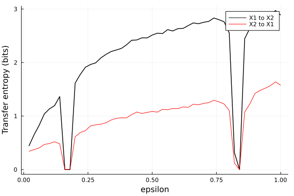
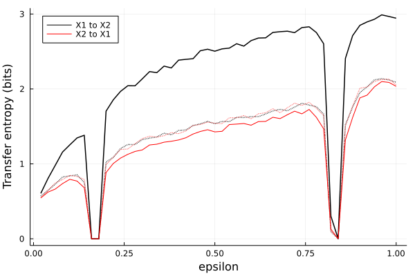

Transfer entropy
Traditional
The following transferentropy function computes transfer entropy "manually", that is, in addition to specifying an estimator, you have to specify embedding parameters.
TransferEntropy.transferentropy — Functiontransferentropy(s, t, [c,] est; base = 2, q = 1,
τT = -1, τS = -1, η𝒯 = 1, dT = 1, dS = 1, d𝒯 = 1, [τC = -1, dC = 1]
)Estimate transfer entropy[Schreiber2000] from source s to target t, $TE^{q}(s \to t)$, using the provided entropy/probability estimator est with logarithms to the given base. Optionally, condition on c and estimate the conditional transfer entropy $TE^{q}(s \to t | c)$. The input series s, t, and c must be equal-length real-valued vectors.
Compute either Shannon transfer entropy (q = 1, which is the default) or the order-q Rényi transfer entropy[Jizba2012] by setting q different from 1.
All possible estimators that can be used are described in the online documentation.
Keyword Arguments
Keyword arguments tune the embedding that will be done to each of the timeseries (with more details following below). In short, the embedding lags τT, τS, τC must be zero or negative, the prediction lag η𝒯 must be positive, and the embedding dimensions dT, dS, dC, d𝒯 must be greater than or equal to 1. Thus, the convention is to use negative lags to indicate embedding delays for past state vectors (for the $T$, $S$ and $C$ marginals, detailed below), and positive lags to indicate embedding delays for future state vectors (for the $\mathcal T$ marginal, also detailed below).
The default behaviour is to use scalar timeseries for past state vectors (in that case, the τT, τS or τC does not affect the analysis).
Description
Transfer entropy on scalar time series
Transfer entropy[Schreiber2000] between two simultaneously measured scalar time series $s(n)$ and $t(n)$, $s(n) = \{ s_1, s_2, \ldots, s_N \}$ and $t(n) = \{ t_1, t_2, \ldots, t_N \}$, is is defined as
\[TE(s \to t) = \sum_i p(s_i, t_i, t_{i+\eta}) \log \left( \dfrac{p(t_{i+\eta} | t_i, s_i)}{p(t_{i+\eta} | t_i)} \right)\]
Transfer entropy on generalized embeddings
By defining the vector-valued time series, it is possible to include more than one historical/future value for each marginal (see 'Uniform vs. non-uniform embeddings' below for embedding details):
- $\mathcal{T}^{(d_{\mathcal T}, \eta_{\mathcal T})} = \{t_i^{(d_{\mathcal T}, \eta_{\mathcal T})} \}_{i=1}^{N}$,
- $T^{(d_T, \tau_T)} = \{t_i^{(d_T, \tau_T)} \}_{i=1}^{N}$,
- $S^{(d_S, \tau_S)} = \{s_i^{(d_T, \tau_T)} \}_{i=1}^{N}$, and
- $C^{(d_C, \tau_C)} = \{s_i^{(d_C, \tau_C)} \}_{i=1}^{N}$.
The non-conditioned generalized and conditioned generalized forms of the transfer entropy are then
\[TE(s \to t) = \sum_i p(S,T, \mathcal{T}) \log \left( \dfrac{p(\mathcal{T} | T, S)}{p(\mathcal{T} | T)} \right)\]
\[TE(s \to t | c) = \sum_i p(S,T, \mathcal{T}, C) \log \left( \dfrac{p(\mathcal{T} | T, S, C)}{p(\mathcal{T} | T, C)} \right)\]
Uniform vs. non-uniform embeddings
The N state vectors for each marginal are either
- uniform, of the form $x_{i}^{(d, \omega)} = (x_i, x_{i+\omega}, x_{i+2\omega}, \ldots x_{i+(d - 1)\omega})$, with equally spaced state vector entries. Note: When constructing marginals for $T$, $S$ and $C$, we need $\omega \leq 0$ to get present/past values, while $\omega > 0$ is necessary to get future states when constructing $\mathcal{T}$.
- non-uniform, of the form $x_{i}^{(d, \omega)} = (x_i, x_{i+\omega_1}, x_{i+\omega_2}, \ldots x_{i+\omega_{d}})$, with non-equally spaced state vector entries $\omega_1, \omega_2, \ldots, \omega_{d}$, which can be freely chosen. Note: When constructing marginals for $T$, $S$ and $C$, we need $\omega_i \leq 0$ for all $\omega_i$ to get present/past values, while $\omega_i > 0$ for all $\omega_i$ is necessary to get future states when constructing $\mathcal{T}$.
In practice, the dT-dimensional, dS-dimensional and dC-dimensional state vectors comprising $T$, $S$ and $C$ are constructed with embedding lags τT, τS, and τC, respectively. The d𝒯-dimensional future states $\mathcal{T}^{(d_{\mathcal T}, \eta_{\mathcal T})}$ are constructed with prediction lag η𝒯 (i.e. predictions go from present/past states to future states spanning a maximum of d𝒯*η𝒯 time steps). Note: in Schreiber's paper, only the historical states are defined as potentially higher-dimensional, while the future states are always scalar.
Estimation
Transfer entropy is here estimated by rewriting the above expressions as a sum of marginal entropies, and extending the definitions above to use Rényi generalized entropies of order q as
\[TE^{q}(s \to t) = H^{q}(\mathcal T, T) + H^{q}(T, S) - H^{q}(T) - H^{q}(\mathcal T, T, S),\]
\[TE^{q}(s \to t | c) = H^{q}(\mathcal T, T, C) + H^{q}(T, S, C) - H^{q}(T, C) - H^{q}(\mathcal T, T, S, C),\]
where $H^{q}(\cdot)$ is the generalized Rényi entropy of order $q$. This is equivalent to the Rényi transfer entropy implementation in Jizba et al. (2012)[Jizba2012].
Examples
Default estimation (scalar marginals):
# Symbolic estimator, motifs of length 4, uniform delay vectors with lag 1
est = SymbolicPermutation(m = 4, τ = 1)
x, y = rand(100), rand(100)
transferentropy(x, y, est)Increasing the dimensionality of the $T$ marginal (present/past states of the target variable):
# Binning-based estimator
est = VisitationFrequency(RectangularBinning(4))
x, y = rand(100), rand(100)
# Uniform delay vectors when `τT` is an integer (see explanation above)
# Here t_{i}^{(dT, τT)} = (t_i, t_{i+τ}, t_{i+2τ}, \ldots t_{i+(dT-1)τ})
# = (t_i, t_{i-2}, t_{i-4}, \ldots t_{i-6τ}), so we need zero/negative values for `τT`.
transferentropy(x, y, est, dT = 4, τT = -2)
# Non-uniform delay vectors when `τT` is a vector of integers
# Here t_{i}^{(dT, τT)} = (t_i, t_{i+τ_{1}}, t_{i+τ_{2}}, \ldots t_{i+τ_{dT}})
# = (t_i, t_{i-7}, t_{i-25}), so we need zero/negative values for `τT`.
transferentropy(x, y, est, dT = 3, τT = [0, -7, -25])Logarithm bases and the order of the Rényi entropy can also be tuned:
x, y = rand(100), rand(100)
est = NaiveKernel(0.3)
transferentropy(x, y, est, base = MathConstants.e, q = 2) # TE in nats, order-2 Rényi entropyAutomated variable selection
The bbnue function optimizes embedding parameters using an iterative procedure for variable selection, and performs null hypothesis testing as part of that procedure.
TransferEntropy.bbnue — Functionbbnue(source, target, [cond], est;
η = 1, include_instantaneous = true,
method_delay = "ac_min", maxlag::Union{Int, Float64} = 0.05,
surr::Surrogate = RandomShuffle(), nsurr = 100, α = 0.05)
) → te, js, τs, idxs_source, idxs_target, idxs_condEstimate transfer entropy (TE) from source to target (conditioned on cond if given) for prediction lag η, using the bootstrap-based non-uniform embedding (BBNUE) method from Montalta et al. (2004) [Montalto2014].
Implementation details
The BBNUE method uses a bootstrap-based criterion to identify the most relevant and minimally redundant variables from the the past of target, present/past of source, and (if given) the present/past of cond, that contribute most to target's future.
This implementation uses a conditional entropy minimization criterion for selecting variables, which is what Montalto et al. (2014)[Montalto2014] uses for their bin-estimator. Here, any estimator can be used, but variables will be selected using conditional entropy minimization regardless of the choice of estimator.
Montalto et al.'s bin-estimator corresponds to using the VisitationFrequency estimator with bins whose sides are equal-length, e.g. VisitationFrequency(RectangularBinning(0.5)). In this implementation, any rectangular binning can be used.
Input data
Multivariate source, target and cond (if given) can be given as univariate AbstractVectors or as multivariate Datasets or Vector{AbstractVector}.
For example, if you want to compute the BBNUE-transfer entropy from a univariate source to a univariate target, potentially conditioned on many different variables, you can do the following:
n = 1000
# Source and target variables
s, t = rand(n), rand(n)
# Variables that might potentially influence `t` along with `s`
c1, c2, c3 = rand(n), rand(n), rand(n)
est = NaiveKernel(0.3)
bbnue(s, t, Dataset([c1, c2, c3]), est)Variable selection and significance testing
In this implementation, the maximum lag for each embedding variable is determined using estimate_delay from DelayEmbeddings. The keywords method_delay (the default is "ac_min") controls the method for estimating the delay, and maxlag is the maximum allowed delay (if maxlag ∈ [0, 1] is a fraction, then the maximum lag is that fraction of the input time series length, and if maxlag is an integer, then the maximum lag is maxlag).
If instantaneous is true, then instantaneous interactions are also considered, i.e. effects like source(t) → target(t) are allowed. η is the forward prediction lag.
Significance testing is performed using a permutation test. At each iteration of the variable selection routine, we first compute the transfer entropy using the new candidate $c_k$. Then, the computation is repeated nsurr times, at each iteration replacing $c_k$ with a surrogate of type surr. If transfer entropy using the original $c_k$ exceeds the the 1 - α-quantile of that of the surrogate ensemble, then $c_k$ is deemed significant to the future of target and is included in the set of selected variables.
If no relevant variables pass the permutation test, then TE is not well-defined, and a value of 0.0 is returned.
Returns
A 6-tuple is returned, consisting of:
te: The computed transfer entropy value.js: The indices of the selected variables.js[i]is thei-th entry in the array[idxs_source..., idxs_target..., idxs_cond...,].τs: The embedding lags of the selected variables.τs[i]corresponds tojs[i].idxs_source: The indices of the source variables.idxs_target: The indices of the target variables.idxs_cond: The indices of the conditional variables (empty ifcondis not given).
Example
using CausalityTools, DynamicalSystems
sys = ExampleSystems.logistic2_unidir(c_xy = 0.8, r₁ = 3.78, r₂ = 3.92)
orbit = trajectory(sys, 10000, Ttr = 10000)
x, y = columns(orbit)
# Use a coarse-grained rectangular binning with subdivisions in each dimension,
# to keep computation costs low and to ensure the probability distributions
# over the bins don't approach the uniform distribution (need enough points
# to fill bins).
est = NaiveKernel(0.3)
te_xy = bbnue(x, y, est, surr = RandomShuffle(), nsurr = 100, include_instantaneous = true)
te_yx = bbnue(y, x, est, surr = RandomShuffle(), nsurr = 100, include_instantaneous = true)
te_xy, te_yxExample: Reproducing Schreiber (2000)
Let's try to reproduce the results from Schreiber's original paper[Schreiber2000] on transfer entropy. We'll use a visitation frequency estimator, which computes entropies by counting visits of the system's orbit to discrete portions of its reconstructed state space.
using DynamicalSystems, CausalityTools, Plots, Random, StatsBase
Random.seed!(12234)
function ulam_system(dx, x, p, t)
f(x) = 2 - x^2
ε = p[1]
dx[1] = f(ε*x[length(dx)] + (1-ε)*x[1])
for i in 2:length(dx)
dx[i] = f(ε*x[i-1] + (1-ε)*x[i])
end
end
ds = DiscreteDynamicalSystem(ulam_system, rand(100) .- 0.5, [0.04])
trajectory(ds, 1000; Ttr = 1000)
εs = 0.02:0.02:1.0
te_x1x2 = zeros(length(εs)); te_x2x1 = zeros(length(εs))
for (i, ε) in enumerate(εs)
set_parameter!(ds, 1, ε)
tr = trajectory(ds, 2000; Ttr = 5000)
X1 = tr[:, 1]; X2 = tr[:, 2]
@assert !any(isnan, X1)
@assert !any(isnan, X2)
binning = RectangularBinning(0.2) # guess an appropriate bin width of 0.2
te_x1x2[i] = transferentropy(X1, X2, VisitationFrequency(binning), base = 2)
te_x2x1[i] = transferentropy(X2, X1, VisitationFrequency(binning), base = 2)
end
plot()
plot(εs, te_x1x2, label = "X1 to X2", c = :black, lw = 1.5)
plot!(εs, te_x2x1, label = "X2 to X1", c = :red)
xlabel!("epsilon")
ylabel!("Transfer entropy (bits)")
As expected, transfer entropy from X1 to X2 is higher than from X2 to X1 across parameter values for ε. But, by our definition of the ulam system, dynamical coupling only occurs from X1 to X2. The results, however, show nonzero transfer entropy in both directions. What does this mean?
Computing transfer entropy from finite time series introduces bias, and so does any particular choice of entropy estimator used to calculate it. To determine whether a transfer entropy estimate should be trusted, we can employ surrogate testing. We'll generate surrogate using TimeseriesSurrogates.jl.
In the example below, we continue with the same time series generated above. However, at each value of ε, we also compute transfer entropy for nsurr = 50 different randomly shuffled (permuted) versions of the source process. If the original transfer entropy exceeds that of some percentile the transfer entropy estimates of the surrogate ensemble, we will take that as "significant" transfer entropy.
nsurr = 50
te_x1x2 = zeros(length(εs)); te_x2x1 = zeros(length(εs))
te_x1x2_surr = zeros(length(εs), nsurr); te_x2x1_surr = zeros(length(εs), nsurr)
for (i, ε) in enumerate(εs)
set_parameter!(ds, 1, ε)
tr = trajectory(ds, 1000; Ttr = 5000)
X1 = tr[:, 1]; X2 = tr[:, 2]
@assert !any(isnan, X1)
@assert !any(isnan, X2)
binning = RectangularBinning(0.2) # guess an appropriate bin width of 0.2
est = VisitationFrequency(binning)
te_x1x2[i] = transferentropy(X1, X2, est, base = 2)
te_x2x1[i] = transferentropy(X2, X1, est, base = 2)
s1 = surrogenerator(X1, RandomShuffle()); s2 = surrogenerator(X2, RandomShuffle())
for j = 1:nsurr
te_x1x2_surr[i, j] = transferentropy(s1(), X2, est, base = 2)
te_x2x1_surr[i, j] = transferentropy(s2(), X1, est, base = 2)
end
end
# Compute 95th percentiles of the surrogates for each ε
qs_x1x2 = [quantile(te_x1x2_surr[i, :], 0.95) for i = 1:length(εs)]
qs_x2x1 = [quantile(te_x2x1_surr[i, :], 0.95) for i = 1:length(εs)]
plot(xlabel = "epsilon", ylabel = "Transfer entropy (bits)", legend = :topleft)
plot!(εs, te_x1x2, label = "X1 to X2", c = :black, lw = 1.5)
plot!(εs, qs_x1x2, label = "", c = :black, ls = :dot, lw = 1.5)
plot!(εs, te_x2x1, label = "X2 to X1", c = :red)
plot!(εs, qs_x2x1, label = "", c = :red, ls = :dot)
The plot above shows the original transfer entropies (solid lines) and the 95th percentile transfer entropies of the surrogate ensembles (dotted lines). As expected, using the surrogate test, the transfer entropies from X1 to X2 are mostly significant (solid black line is above dashed black line). The transfer entropies from X2 to X1, on the other hand, are mostly not significant (red solid line is below red dotted line).
[Schreiber2000](Schreiber, Thomas. "Measuring information transfer." Physical review letters 85.2 (2000): 461.)
- Schreiber2000Schreiber, T. (2000). Measuring information transfer. Physical review letters, 85(2), 461.
- Jizba2012Jizba, P., Kleinert, H., & Shefaat, M. (2012). Rényi’s information transfer between financial time series. Physica A: Statistical Mechanics and its Applications, 391(10), 2971-2989.
- Montalto2014Montalto, A.; Faes, L.; Marinazzo, D. MuTE: A MATLAB toolbox to compare established and novel estimators of the multivariate transfer entropy. PLoS ONE 2014, 9, e109462.